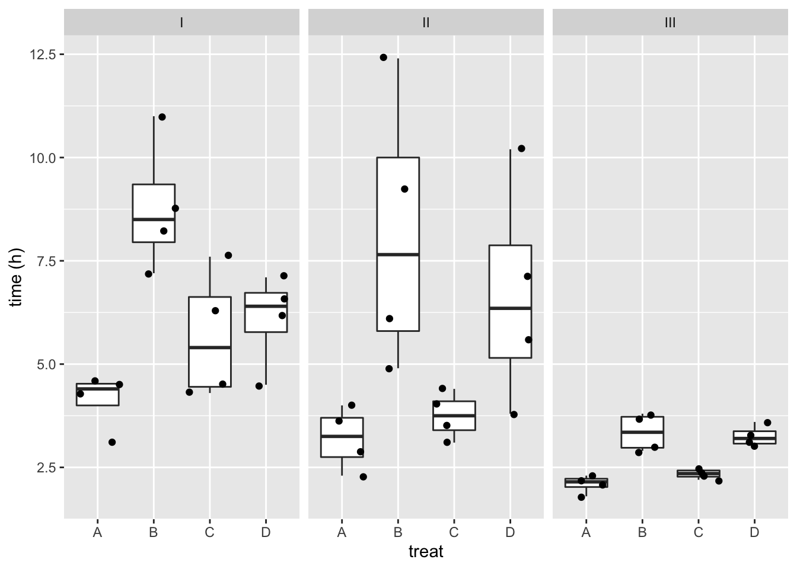
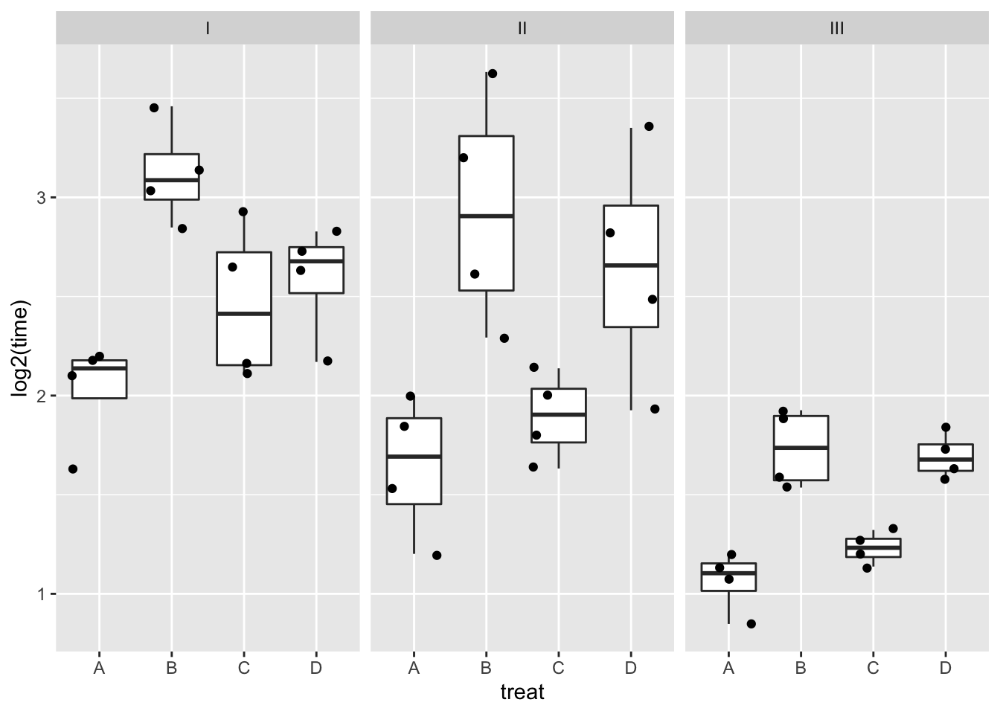
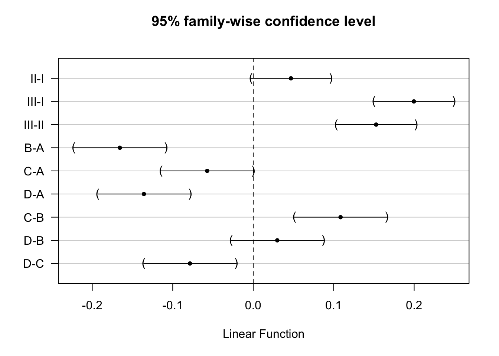
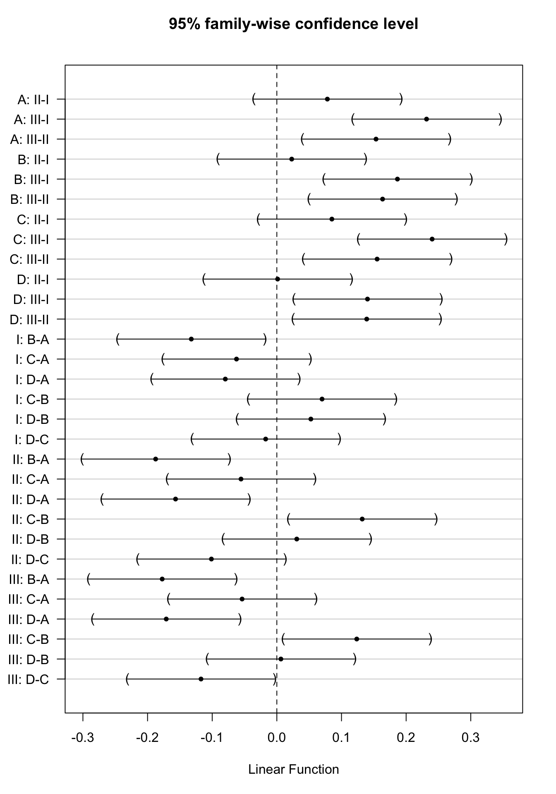

8.2. Multiple Regression - Factorial Designs
Lieven Clement
statOmics, Ghent University (https://statomics.github.io)
1 Introduction
In this section we will illustrate how factorial designs can be analysed using the general linear model.
We will focus on a two-way anova design where we will model a continous response with two factors.
2 Data
48 rats were allocated to
- 3 poisons (I,II,III) and
- 4 treatments (A,B,C,D),
and,
- the survival time was measured in (10 h)
We will first transform the data to hours.
library(faraway)
data(rats)
rats <- rats %>%
mutate(time=time * 10)
library(GGally)
rats %>%
ggpairs()
The data exploration indicates that there seems to be an effect of both poison type and treatment.
rats %>%
ggplot(aes(x=treat,y=time)) +
geom_boxplot(outlier.shape=NA) +
geom_jitter() +
facet_wrap(~poison) +
ylab("time (h)")
- There might be an interaction, i.e. the effect of the treatment might be different according to the poison that has been adopted.
- The boxplots also indicate that the data are heteroscedastic.
3 Model
We will model the data with a main effect for poison and treatment and an poison \(\times\) treatment interaction.
\[ \begin{array}{lcl} y_i &=& \beta_0 + \beta_{II} x_{iII} + \beta_{III} x_{iIII} + \\ && \beta_{B} x_{iB} + \beta_{C} x_{iC} + \beta_{D} x_{iD} + \\ &&\beta_{II:B}x_{iII}x_{iB} + \beta_{II:C}x_{iII}x_{iC} + \beta_{II:D}x_{iII}x_{iD} + \\ &&\beta_{III:B}x_{iIII}x_{iB} + \beta_{III:C}x_{iIII}x_{iC} + \beta_{III:D}x_{iIII}x_{iD} + \epsilon_i \end{array} \] with \(i = 1, \ldots, n\), \(n=48\), \(x_{iII}\), \(x_{iIII}\), \(x_{iB}\), \(x_{iC}\) and \(x_{iD}\) dummy variables for poison II, III, treatment B, C, and D, respectively.
Call:
lm(formula = time ~ poison * treat, data = rats)
Residuals:
Min 1Q Median 3Q Max
-3.2500 -0.4875 0.0500 0.4312 4.2500
Coefficients:
Estimate Std. Error t value Pr(>|t|)
(Intercept) 4.1250 0.7457 5.532 2.94e-06 ***
poisonII -0.9250 1.0546 -0.877 0.3862
poisonIII -2.0250 1.0546 -1.920 0.0628 .
treatB 4.6750 1.0546 4.433 8.37e-05 ***
treatC 1.5500 1.0546 1.470 0.1503
treatD 1.9750 1.0546 1.873 0.0692 .
poisonII:treatB 0.2750 1.4914 0.184 0.8547
poisonIII:treatB -3.4250 1.4914 -2.297 0.0276 *
poisonII:treatC -1.0000 1.4914 -0.671 0.5068
poisonIII:treatC -1.3000 1.4914 -0.872 0.3892
poisonII:treatD 1.5000 1.4914 1.006 0.3212
poisonIII:treatD -0.8250 1.4914 -0.553 0.5836
---
Signif. codes: 0 '***' 0.001 '**' 0.01 '*' 0.05 '.' 0.1 ' ' 1
Residual standard error: 1.491 on 36 degrees of freedom
Multiple R-squared: 0.7335, Adjusted R-squared: 0.6521
F-statistic: 9.01 on 11 and 36 DF, p-value: 1.986e-07


The errors, however, seem to be heteroscedastic and there seems to be a mean - variance relationship and they are also appear to be distributed with broader tails than the normal distribution.
3.1 Transformations
3.1.1 log transformation
rats %>%
ggplot(aes(x=treat,y=log2(time))) +
geom_boxplot(outlier.shape=NA) +
geom_jitter() +
facet_wrap(~poison)


Log transformation does not remove the heteroscedasticity completely.


4 Inference
There are multiple interaction terms involved in the factorial design. We will first assess them together, which can be done using the anova table.
4.1 Removing the non-significant interaction term
The interaction appears to be not significant at the 5% level.
A common practice is to remove the interaction from the analysis. We then obtain an additive model and the effects of the two factors poison and treatment can be assessed separately.


The anova table shows that the effect of the poison and the treatment are both extremely significant (\(p<< 0.001\)).
In the additive model we can assess the effect of the poison type and the treatments, separately in a post-hoc analysis.
library(multcomp)
comparisons <- glht(rats4, linfct = mcp(poison = "Tukey", treat="Tukey"))
summary(comparisons)
Simultaneous Tests for General Linear Hypotheses
Multiple Comparisons of Means: Tukey Contrasts
Fit: lm(formula = 1/time ~ poison + treat, data = rats)
Linear Hypotheses:
Estimate Std. Error t value Pr(>|t|)
poison: II - I == 0 0.04686 0.01744 2.688 0.07353 .
poison: III - I == 0 0.19964 0.01744 11.451 < 0.001 ***
poison: III - II == 0 0.15278 0.01744 8.763 < 0.001 ***
treat: B - A == 0 -0.16574 0.02013 -8.233 < 0.001 ***
treat: C - A == 0 -0.05721 0.02013 -2.842 0.05082 .
treat: D - A == 0 -0.13583 0.02013 -6.747 < 0.001 ***
treat: C - B == 0 0.10853 0.02013 5.391 < 0.001 ***
treat: D - B == 0 0.02991 0.02013 1.485 0.61545
treat: D - C == 0 -0.07862 0.02013 -3.905 0.00281 **
---
Signif. codes: 0 '***' 0.001 '**' 0.01 '*' 0.05 '.' 0.1 ' ' 1
(Adjusted p values reported -- single-step method)
Simultaneous Confidence Intervals
Multiple Comparisons of Means: Tukey Contrasts
Fit: lm(formula = 1/time ~ poison + treat, data = rats)
Quantile = 2.8496
95% family-wise confidence level
Linear Hypotheses:
Estimate lwr upr
poison: II - I == 0 0.0468641 -0.0028188 0.0965471
poison: III - I == 0 0.1996425 0.1499595 0.2493255
poison: III - II == 0 0.1527784 0.1030954 0.2024613
treat: B - A == 0 -0.1657402 -0.2231092 -0.1083713
treat: C - A == 0 -0.0572135 -0.1145825 0.0001554
treat: D - A == 0 -0.1358338 -0.1932028 -0.0784649
treat: C - B == 0 0.1085267 0.0511577 0.1658957
treat: D - B == 0 0.0299064 -0.0274625 0.0872754
treat: D - C == 0 -0.0786203 -0.1359892 -0.0212513plot(comparisons,yaxt="none")
contrastNames <- c("II-I","III-I","III-II","B-A","C-A","D-A","C-B","D-B","D-C")
axis(2,at=c(length(contrastNames):1), labels=contrastNames,las=2)
4.2 Keeping the non-significant interaction term
We know that accepting the null hypothesis that there is no interaction is a weak conclusion. It is possible that the experiment was simply underpowered to pick up the interaction. We can choose to keep the interaction in the model.
If the interaction were to be significant, this would mean that the effect of the poison changes according to the treatment and vice versa. Then, we cannot study the poison effects and treatment effects separately.
[[1]]
Hence, in case of a significant interaction we should study the effect of the poison for each treatment separately:
- For treatment A we would have to assess the following comparisons:
- II-I: \(H_0: \beta_{II}=0\)
- III-I: \(H_0: \beta_{III}=0\)
- III-II: \(H_0: \beta_{III}-\beta_{II}=0\)
- For treatment B we would have to assess the following comparisons:
- II-I: \(H_0: \beta_{II}+\beta_{II:B}=0\)
- III-I: \(H_0: \beta_{III}+\beta_{III:B}=0\)
- III-II: \(H_0: \beta_{III}+\beta_{III:B}-\beta_{II}-\beta_{II:B}=0\)
- For treatment C we would have to assess the following comparisons:
- II-I: \(H_0: \beta_{II}+\beta_{II:C}=0\)
- III-I: \(H_0: \beta_{III}+\beta_{III:C}=0\)
- III-II: \(H_0: \beta_{III}+\beta_{III:C}-\beta_{II}-\beta_{II:C}=0\)
- For treatment C we would have to assess the following comparisons:
- II-I: \(H_0: \beta_{II}+\beta_{II:D}=0\)
- III-I: \(H_0: \beta_{III}+\beta_{III:D}=0\)
- III-II: \(H_0: \beta_{III}+\beta_{III:D}-\beta_{II}-\beta_{II:D}=0\)
The same holds for assessing the effect of the treatment, which should be done for each poison separately:
- Poison I
- B-A: \(H_0: \beta_{B}=0\)
- C-A: \(H_0: \beta_{C}=0\)
- D-A: \(H_0: \beta_{D}=0\)
- C-B: \(H_0: \beta_{C}-\beta_{B}=0\)
- D-B: \(H_0: \beta_{D}-\beta_{B}=0\)
- D-C: \(H_0: \beta_{D}-\beta_{C}=0\)
- Poison II
- B-A: \(H_0: \beta_{B}+\beta_{II:B}=0\)
- C-A: \(H_0: \beta_{C}+\beta_{II:C}=0\)
- D-A: \(H_0: \beta_{D}+\beta_{II:D}=0\)
- C-B: \(H_0: \beta_{C}+\beta_{II:C}-\beta_{B}-\beta_{II:B}=0\)
- D-B: \(H_0: \beta_{D}+\beta_{II:D}-\beta_{B}-\beta_{II:B}=0\)
- D-C: \(H_0: \beta_{D}+\beta_{II:D}-\beta_{C}-\beta_{II:C}=0\)
- Poison III
- B-A: \(H_0: \beta_{B}+\beta_{III:B}=0\)
- C-A: \(H_0: \beta_{C}+\beta_{III:C}=0\)
- D-A: \(H_0: \beta_{D}+\beta_{II:D}=0\)
- C-B: \(H_0: \beta_{C}+\beta_{III:C}-\beta_{B}-\beta_{III:B}=0\)
- D-B: \(H_0: \beta_{D}+\beta_{III:D}-\beta_{B}-\beta_{III:B}=0\)
- D-C: \(H_0: \beta_{D}+\beta_{III:D}-\beta_{C}-\beta_{III:C}=0\)
comparisonsInt <- glht(rats3, linfct = c(
"poisonII = 0",
"poisonIII = 0",
"poisonIII - poisonII = 0",
"poisonII + poisonII:treatB = 0",
"poisonIII + poisonIII:treatB = 0",
"poisonIII + poisonIII:treatB - poisonII- poisonII:treatB = 0",
"poisonII + poisonII:treatC = 0",
"poisonIII + poisonIII:treatC = 0",
"poisonIII + poisonIII:treatC - poisonII- poisonII:treatC = 0",
"poisonII + poisonII:treatD = 0",
"poisonIII + poisonIII:treatD = 0",
"poisonIII + poisonIII:treatD - poisonII- poisonII:treatD = 0",
"treatB = 0",
"treatC = 0",
"treatD = 0",
"treatC - treatB = 0",
"treatD - treatB = 0",
"treatD - treatC = 0",
"treatB + poisonII:treatB = 0",
"treatC + poisonII:treatC = 0",
"treatD + poisonII:treatD = 0",
"treatC + poisonII:treatC - treatB - poisonII:treatB = 0",
"treatD + poisonII:treatD - treatB - poisonII:treatB = 0",
"treatD + poisonII:treatD - treatC - poisonII:treatC = 0",
"treatB + poisonIII:treatB = 0",
"treatC + poisonIII:treatC = 0",
"treatD + poisonIII:treatD = 0",
"treatC + poisonIII:treatC - treatB - poisonIII:treatB = 0",
"treatD + poisonIII:treatD - treatB - poisonIII:treatB = 0",
"treatD + poisonIII:treatD - treatC - poisonIII:treatC = 0")
)
contrastNames<-
c(paste(rep(LETTERS[1:4],each=3),rep(apply(combn(c("I","II","III"),2)[2:1,],2,paste,collapse="-") ,4),sep=": "),
paste(rep(c("I","II","III"),each=6),rep(apply(combn(c(LETTERS[1:4]),2)[2:1,],2,paste,collapse="-") ,3),sep=": "))
plot(comparisonsInt,yaxt="none")
axis(2,at=c(length(contrastNames):1), labels=contrastNames,las=2)
Here, the interaction was not significant. Hence, the average effect of the poison type on the rate of dying does not change significantly according to the treatment and vice versa. In this case, it would make sense to estimate
- the effect size for each pairwise comparison of poisons by averaging it over all treatments and
- the effect size for each pairwise comparison of treatments by averaging it over all different poisons.
This should give us similar estimates as those obtained upon removing the interaction from the model.
e.g. for poison III vs poison II that would result in
- III-II: \[H_0: \frac{(\beta_{III}-\beta_{II}) + (\beta_{III} + \beta_{III:B}-\beta_{II} - \beta_{II:B}) + (\beta_{III} + \beta_{III:C}-\beta_{II} - \beta_{II:C} + + (\beta_{III} + \beta_{III:D}-\beta_{II} - \beta_{II:D}) ) }{4}=0 \] \[ H_0:\beta_{III} + \frac{1}{4} \times \beta_{III:B} + \frac{1}{4} \times\beta_{III:C} + \frac{1}{4} \times\beta_{III:D} -\beta_{II} - \frac{1}{4} \times\beta_{II:B} - \frac{1}{4} \times\beta_{II:C} - \frac{1}{4} \times\beta_{II:D}=0 \]
We can calculate the average contrast for each comparison of interest.
contrasts <- c(
"poisonII + 1/4*poisonII:treatB + 1/4*poisonII:treatC + 1/4*poisonII:treatD = 0",
"poisonIII + 1/4*poisonIII:treatB + 1/4*poisonIII:treatC + 1/4*poisonIII:treatD= 0",
"poisonIII + 1/4*poisonIII:treatB + 1/4*poisonIII:treatC + 1/4*poisonIII:treatD - poisonII - 1/4*poisonII:treatB - 1/4*poisonII:treatC - 1/4*poisonII:treatD = 0",
"treatB + 1/3*poisonII:treatB + 1/3*poisonIII:treatB = 0",
"treatC + 1/3*poisonII:treatC + 1/3*poisonIII:treatC = 0",
"treatD + 1/3*poisonII:treatD + 1/3*poisonIII:treatD = 0",
"treatC + 1/3*poisonII:treatC + 1/3*poisonIII:treatC - treatB - 1/3*poisonII:treatB - 1/3*poisonIII:treatB = 0",
"treatD + 1/3*poisonII:treatD + 1/3*poisonIII:treatD - treatB - 1/3*poisonII:treatB - 1/3*poisonIII:treatB = 0",
"treatD + 1/3*poisonII:treatD + 1/3*poisonIII:treatD - treatC - 1/3*poisonII:treatC - 1/3*poisonIII:treatC = 0")
comparisonsInt2 <- glht(rats3, linfct = contrasts
)
plot(comparisonsInt2,yaxt="none")
contrastNames <- c("II-I","III-I","III-II","B-A","C-A","D-A","C-B","D-B","D-C")
axis(2,at=c(length(contrastNames):1), labels=contrastNames,las=2)
Indeed, the effect sizes are exactly the same because the experiment is balanced.
Note, that the standard errors differ slightly. Indeed the errors of both models will differ as well as the remaining degrees of freedom of the errors \(n-p\).
data.frame(Additive_coef=summary(comparisons)$test$coef,Additive_se=summary(comparisons)$test$sigma,Int_coef=summary(comparisonsInt2)$test$coef,int_se=summary(comparisonsInt2)$test$sigma) %>% round(3)5 Conclusion
There is an extremely significant effect of the Poison and Treatment on the rate of dying of the rats (p << 0.001).
The effect of the poison does not significantly differ according to the treatment and vice versa (p = 0.387).
The rate of dying is on average 0.2h\(^{-1}\) and 0.15h\(^{-1}\) higher for rats that are exposed to poison III that those exposed to poison I and II, respectively (both p << 0.001, 95% CI III-I: [0.15, 0.25]h\(^{-1}\), 95% CI III-II: [0.1, 0.2]h\(^{-1}\)) The average rate of dying was not significantly different between rats exposed to poison I and poison II (p=0.074).
The rate of dying is on average 0.17h\(^{-1}\) and 0.14h\(^{-1}\) higher upon treatment A than upon treatment B and D, respectively (p << 0.001, 95% CI B-A: [-0.22, -0.11]h\(^{-1}\), 95% CI D-A: [-0.19, -0.08]h\(^{-1}\)). The rate of dying is on average 0.11h\(^{-1}\) and 0.08h\(^{-1}\) higher upon treatment C than upon treatment B and D, respectively (C-B: p << 0.001, 95% CI [0.05, 0.17]h\(^{-1}\) , D-C: p = 0.003, 95% CI [-0.14, -0.02]h\(^{-1}\)). The average rate of dying was not significantly different between treatment C and A (p = 0.051), and, between treatment B and D (p = 0.61).
All p-values are corrected for multiple testing.